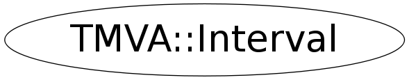

class TMVA::Interval
Interval Interval definition, continuous and discrete Interval(min,max) : a continous interval [min,max] Interval(min,max,n): a "discrete interval" [min,max], i.e the n numbers: min, min+step, min+2*step,...., min+(n-1)*step, min+n*step=max e.g.: Interval(1,5,5)=1,2,3,4,5 Interval(.5,1.,6)= .5, .6., .7, .8, .9, 1.0 Note: **bin** counting starts from ZERO unlike in ROOT histograms
the TMVA::Interval Class
- Interval definition, continuous and discrete
- Interval(min,max) : a continous interval [min,max]
- Interval(min,max,n): a "discrete interval" [min,max], i.e the n numbers:
min, min+step, min+2*step,...., min+(n-1)*step=max
e.g.: Interval(1,5,5)=1,2,3,4,5
Interval(.5,1.,6)= .5, .6., .7, .8, .9, 1.0
Example: Interval(.5,1.,6)
[ min max ]
------------------------------------------------------------
| | | | | |
.5 .6 .7 .8 .9 1.0
bin 0 1 2 3 4 5
Function Members (Methods)
public:
| virtual | ~Interval() |
| static TClass* | Class() |
| Double_t | GetElement(Int_t position) const |
| Double_t | GetMax() const |
| Double_t | GetMean() const |
| Double_t | GetMin() const |
| Int_t | GetNbins() const |
| Double_t | GetRndm(TRandom3&) const |
| Double_t | GetStepSize() const |
| Double_t | GetWidth() const |
| TMVA::Interval | Interval(const TMVA::Interval& other) |
| TMVA::Interval | Interval(Double_t min, Double_t max, Int_t nbins = 0) |
| virtual TClass* | IsA() const |
| TMVA::Interval& | operator=(const TMVA::Interval&) |
| void | SetMax(Double_t m) |
| void | SetMin(Double_t m) |
| virtual void | ShowMembers(TMemberInspector& insp) |
| virtual void | Streamer(TBuffer& b) |
| void | StreamerNVirtual(TBuffer& b) |
Class Charts
{kind=link}
{kind=link}
{kind=link}
{kind=link}

Function documentation
Double_t GetElement(Int_t position) const
calculates the value of the "number" bin in a discrete interval. Parameters: Double_t position